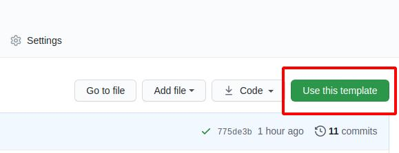
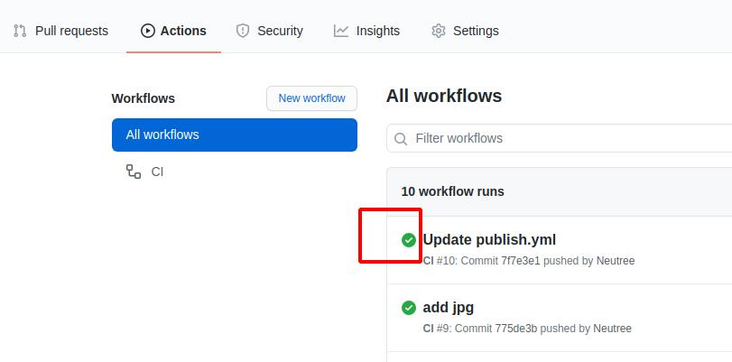
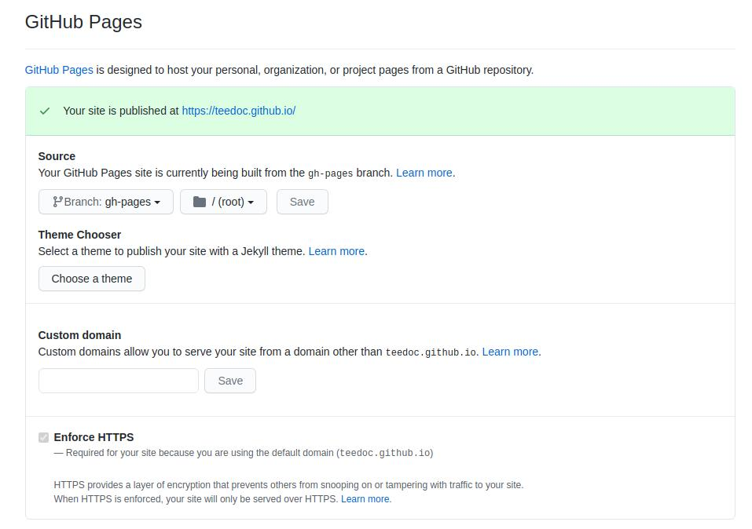

Deploy the website generated by teedoc to github pages
Clone the template warehouse
Visit https://github.com/teedoc/teedoc.github.io
Click Use this template

Then fill in the new warehouse name (if you won't use custom domain, the warehouse name is preferably teedoc.github.io and replace teedoc with your user name or organization name) and description. Create a new warehouse of your own based on this warehouse, and now you have it The warehouse is exactly the same as the official website of teedoc
You will find a directory of
.github/workflows, this is the configuration file ofgithub action, we use this function to achieve:
When we update the source file of the warehouse,github actionautomatically builds and generates static web pages according to the commands of this configuration file, and then pushes to thegh-pagesbranch of this warehouse
Generate ssh key
Then generate a pair of key locally (relevant software needs to be installed under windows, please install it yourself (you will have it if you install git))
ssh-keygen -t rsa -f key.txt
Got the two files key.txt and key.key.pub
Set key
Set the ssh key in the settings of the document project, add a ssh key, copy the content in key.txt.pub, pay attention to the pub file, which is the public key, select Allow write access, and take whatever name you want

Then click Secrets to set secret key-value pairs. The variables that need to be set are:
ACCESS_KEY: Copy the content inkey.txtGIT_EMAIL: Set agitsubmission email, just set yourgithubemailGIT_NAME: Set agitcommit name, just set yourgithubnameREPO: warehouse address, set toorganization name/warehouse nameoruser name/warehouse name, such asteedoc/teedoc.github.io

Trigger build
Like a warehouse submitting a modification, the build will be triggered automatically. You can see the progress and logs in the Actions column
If it is a green tick, it means a success, otherwise it means a failure. You can click in to see what errors are reported in the build log. Generally, the previous value is filled in wrong

Set up pages service
Then find the pages service setting in the settings, open it, and then visit the corresponding domain name, you can check the Enforce HTTPS to enable HTTPS (recommended)
For example, here is https://teedoc.github.io/
Note that if the following path is not
/, and there is no custom domain name (see the following introduction for custom domain names), such ashttps://teedoc.github.io/my_site/, then it needs to be insite_config.jsonConfigure"site_root_url":"/my_site/"

Pages Service Custom Domain
After deployment, there will be a default domain name, such as teedoc.github.io. If you want to use your own domain name, such as teedoc.neucrack.com, you need to customize the domain name.
The file directory of the website root directory mapping is set in the site_config.json file, for example, here is the pages/index/zh directory:
"pages": {
"/": "pages/index/zh",
"/en/": "pages/index/en"
},
Create a new file in this directory, name it CNAME and note that there is no suffix, then write a custom domain name such as teedoc.neucrack.com, save the file, and submit it
You may see the setting of
custom domainin the settings, but you need to set theCNAMEfile as mentioned here to keep it in effect, otherwise the custom domain name will be invalid next time you submit it